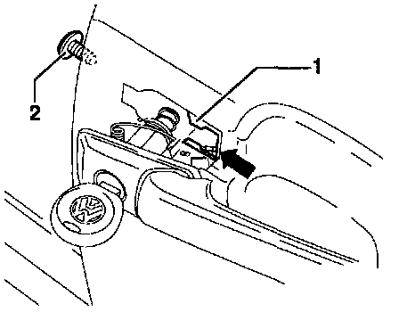

Front Door Exterior Handle: Service and Repair
Removing;
- Insert key in door handle lock cylinder (driver's door only).
- Remove socket-head screw with collar -2-.
- Slide door handle forward.
- On driver's door only, turn key 1/4-turn or 90 ° (arrow).
Door handle carrier -3- releases operating lever -4-.
- Pivot door handle out of door.
Installing:
On vehicles with central locking the carrier for the connecting rod -1- must be in vertical position - arrows- before inserting the door handle.

- Check clip -1- for damage and replace if necessary.
- Pivot door handle into place so that door handle slides past door panel without clearance (arrow).
- Screw in socket-head screw -2-
Tightening torque: 8 Nm (71 in. lb)